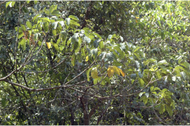
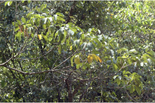
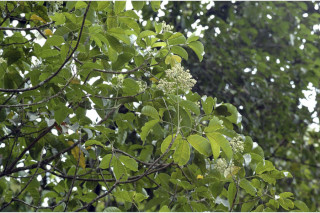
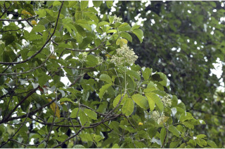
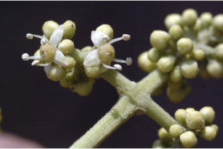
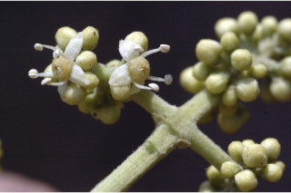

| Leaves : | Leaves compound , trifoliate , opposite , decussate ; rachis 3.5-11 cm long, minutely pubescent when young, pulvinate ; petiolule 0.6-1.1 cm long, canaliculate , slightly pubescent ; leaflets 7-20 x 3-8.5 cm (usually larger in saplings), elliptic to obovate , apex acuminate , base asymmetric or slightly attenuate , margin entire , chartaceous , glandular punctate , glabrous , shining above; midrib slightly canaliculate ; secondary_nerves 7-16 pairs, straight or gradually curved; tertiary_nerves slender, broadly reticulate . |
 



 



 
